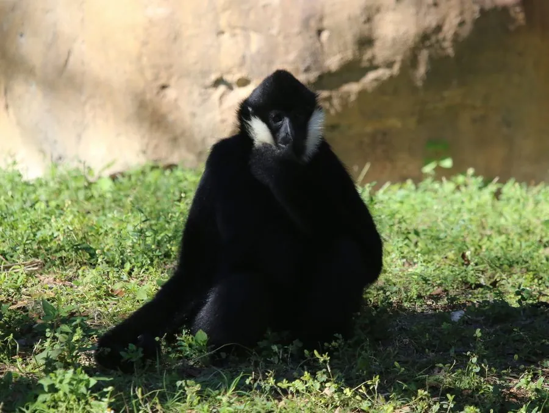

哺乳动物 · 动物界
白颊长臂猿 Nomascus leucogenys

中南半岛与云南的长臂猿，成年雄猿通体黑色、面颊白色，雌猿为金黄色，清晨用歌声宣示领地，极危物种。
- 分类
- 门脊索动物门纲哺乳纲目灵长目科长臂猿科属冠长臂猿属
- 栖息环境
- 热带常绿阔叶林与山地雨林树冠层
- 地理分布
- 中国云南南部及老挝、越南、泰国北部的热带雨林
- 保护级别
- IUCN 极危（CR）；中国国家一级保护动物
物种志
白颊长臂猿体长 0.45–0.6 米，体重 5–8 kg，没有尾巴。成年雄猿通体黑色，面颊两侧有醒目的白色毛；雌猿大部分为金黄色，头顶有黑色冠斑，两者毛色差异明显。它的手臂极长，手掌长而弯曲，适合在树冠层用双臂摆荡前进。
白颊长臂猿分布于中国云南南部、老挝、越南和泰国的热带雨林，栖息于常绿阔叶林和山地雨林。它是树冠层的“臂行者”，双臂摆荡前进，一次可跨越数米，速度极快；多以家庭群活动，一夫一妻，早晨雌雄会合唱，用歌声宣告领地并加强配偶联系。它以果实、嫩叶、花芽和昆虫为食。雌兽妊娠期约 7–8 个月，每胎 1 仔。由于森林砍伐和非法捕猎，白颊长臂猿被列为极危，中国境内野生种群极为稀少，被列为国家一级保护动物。
形态与习性
- 食性果实、嫩叶、花芽与昆虫
- 体长0.45–0.6 m，无尾
- 体重5–8 kg
- 寿命野外约 20–30 年
- 繁殖妊娠期约 7–8 个月，每胎 1 仔
- 毛色雄猿黑色白颊，雌猿金黄色
- 运动双臂摆荡的臂行方式，一次可跨越数米
趣味知识
- 白颊长臂猿雌雄毛色差异极大，雄猿黑、雌猿金黄。
- 它用双臂在树冠层摆荡前进，一次可跨越数米。
- 清晨雌雄长臂猿会合唱，用歌声宣告领地和巩固配偶关系。
- 白颊长臂猿被列为极危，中国境内野生种群极为稀少。